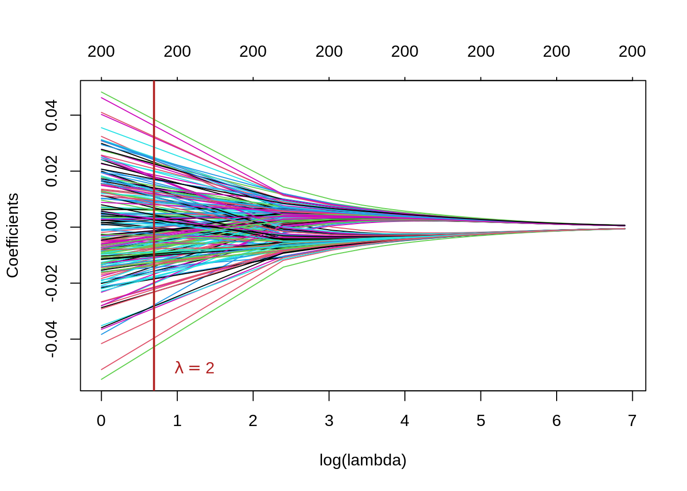
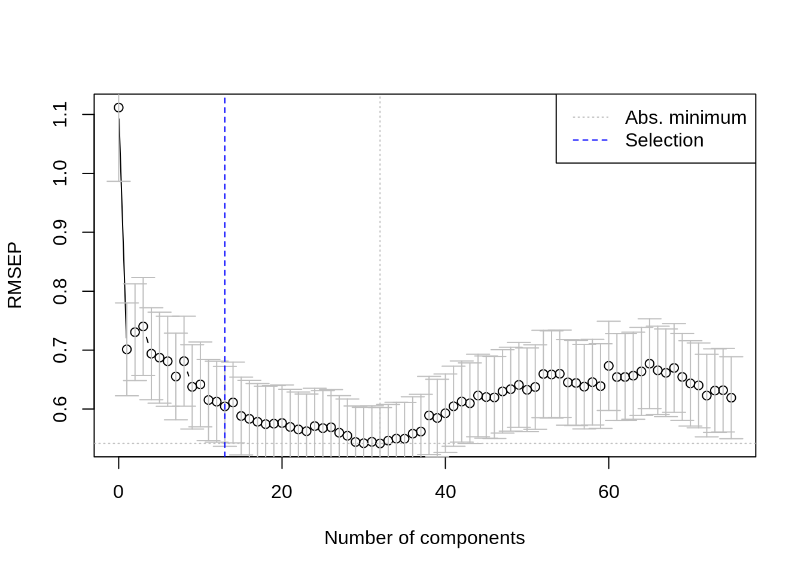
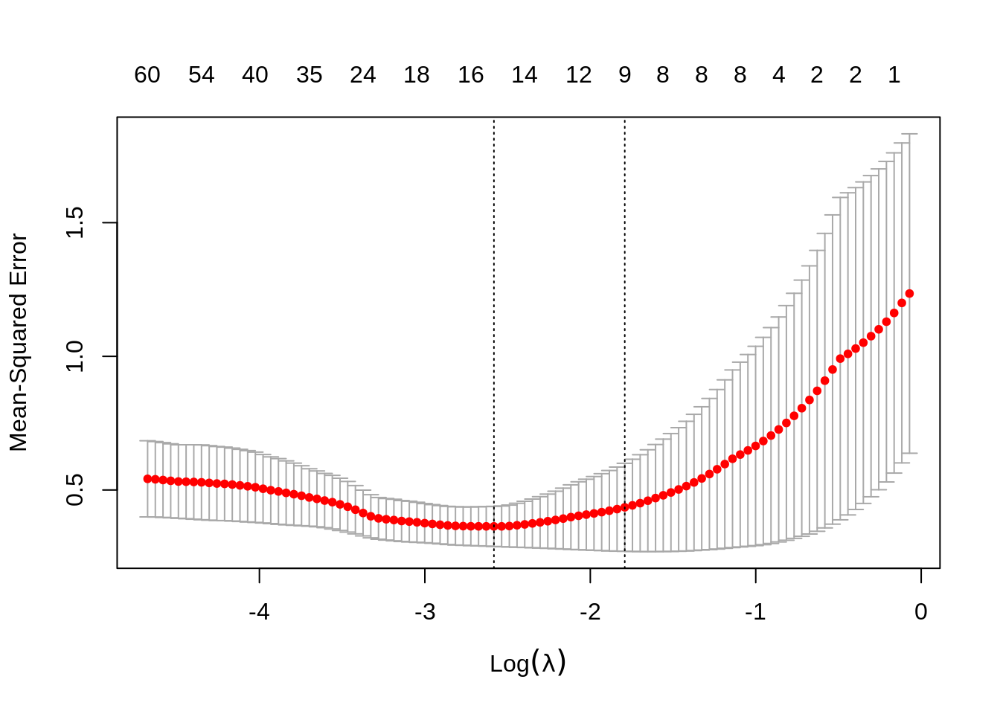

In this lab session we will look at the following topics
glmnet() to carry out ridge regression, lasso and elastic netIn this practical, we will use the dataset eyedata provided by the NormalBetaPrime package. This dataset contains gene expression data of 200 genes for 120 samples. The data originates from microarray experiments of mammalian eye tissue samples.
The dataset consists of two objects:
genes: a \(120 \times 200\) matrix with the expression levels of 200 genes (columns) for 120 samples (rows)trim32: a vector with 120 expression levels of the TRIM32 gene.data(eyedata)
## Look at objects that were just loaded
str(genes)
#> num [1:120, 1:200] 3.68 3.58 3.85 4.13 3.88 ...
#> - attr(*, "dimnames")=List of 2
#> ..$ : chr [1:120] "V2" "V3" "V4" "V5" ...
#> ..$ : chr [1:200] "1377" "1748" "2487" "2679" ...
str(trim32)
#> num [1:120] 8.42 8.36 8.41 8.29 8.27 ...The goal of this exercise is to predict the expression levels of TRIM32 from the expression levels of the 200 genes measured in the microarray experiment. For this, it makes sense to start by constructing centered (and possibly scaled) data. We store this in two matrices X and Y:
Remember that scaling avoids that differences in levels of magnitude will give one variable (gene) more influence in the result. This has been illustrated in the second practical session as well. For the Y vector, this is less of an issue as we’re talking about a single variable. Not scaling will make the predictions interpretable as “deviations from the mean”.
We begin by assuming that the predictors and the outcome have been centered so that the intercept is 0. We are presented with the usual regression model:
\[ Y_i=\beta_i X_{i1}+\dots+\beta_pX_{ip}+\epsilon_i \\ \text{ Or } \mathbf{Y}={\mathbf{X}}{\boldsymbol{\beta}} +{\boldsymbol{\epsilon}} \]
Our goal is to get the least squares estimator of \({\boldsymbol{\beta}}\), given by
\[ \hat{{\boldsymbol{\beta}}}= (\mathbf{X}^T{\mathbf{X}})^{-1}{\mathbf{X}}^T{\mathbf{Y}} \]
in which the \(p \times p\) matrix \(({\mathbf{X}}^T{\mathbf{X}})^{-1}\) is crucial! To be able to calculate the inverse of \({\mathbf{X}}^T \mathbf{X}\), it has to be of full rank \(p\), which would be 200 in this case. Let’s check this:
dim(X) # 120 x 200, so p > n!
#> [1] 120 200
qr(X)$rank
#> [1] 119
XtX <- crossprod(X) # calculates t(X) %*% X more efficiently
qr(XtX)$rank
#> [1] 119
# Try to invert using solve:
solve(XtX)
#> Error in solve.default(XtX): system is computationally singular: reciprocal condition number = 4.20888e-20We realize we cannot compute \(({\mathbf{X}}^T{\mathbf{X}})^{-1}\) because the rank of \(({\mathbf{X}}^T{\mathbf{X}})\) is less than \(p\) hence we can’t get \(\hat{{\boldsymbol{\beta}}}\) by means of least squares! This is generally referred to as the singularity problem.
A first way to deal with this singularity, is to bypass it using principal components. Since \(\min(n,p) = n = 120\), PCA will give 120 components, each being a linear combination of the \(p\) = 200 variables. These 120 PCs contain all information present in the original data. We could as well use an approximation of \({\mathbf{X}}\), i.e using just a few (\(k<120\)) PCs. So we use PCA as a method for reducing the dimensions while retaining as much variation between the observations as possible. Once we have these PCs, we can use them as variables in a linear regression model.
We first compute the PCA on the data with prcomp. We will use an arbitrary cutoff of \(k = 4\) PCs to illustrate the process of performing regression on the PCs.
k <- 4 # Arbitrarily chosen k=4
pca <- prcomp(X)
Vk <- pca$rotation[, 1:k] # the loadings matrix
Zk <- pca$x[, 1:k] # the scores matrix
# Use the scores in classic linear regression
pcr_model1 <- lm(Y ~ Zk)
summary(pcr_model1)
#>
#> Call:
#> lm(formula = Y ~ Zk)
#>
#> Residuals:
#> Min 1Q Median 3Q Max
#> -1.72388 -0.34723 0.02811 0.27817 2.03271
#>
#> Coefficients:
#> Estimate Std. Error t value Pr(>|t|)
#> (Intercept) -2.636e-15 5.454e-02 0.000 1.0000
#> ZkPC1 -7.172e-02 4.950e-03 -14.488 <2e-16 ***
#> ZkPC2 1.273e-02 1.342e-02 0.949 0.3447
#> ZkPC3 3.371e-02 2.326e-02 1.449 0.1500
#> ZkPC4 5.908e-02 2.535e-02 2.330 0.0215 *
#> ---
#> Signif. codes: 0 '***' 0.001 '**' 0.01 '*' 0.05 '.' 0.1 ' ' 1
#>
#> Residual standard error: 0.5975 on 115 degrees of freedom
#> Multiple R-squared: 0.655, Adjusted R-squared: 0.643
#> F-statistic: 54.58 on 4 and 115 DF, p-value: < 2.2e-16As \(\mathbf{X}\) and \(\mathbf{Y}\) are centered, the intercept is approximately 0.
The output shows that PC1 and PC4 have a \(\beta\) estimate that differs significantly from 0 (at \(p < 0.05\)), but the results can’t be readily interpreted, since we have no immediate interpretation of the PCs.
plsPCR can also be performed using the pcr() function from the package pls directly on the data (so without having to first perform the PCA manually). When using this function, you have to keep a few things in mind:
ncompscale = TRUE) and center (set center = TRUE) the predictors first (in the example here, \(\mathbf{X}\) has already been centered and scaled).You can use the function pcr() in much the same way as you would use lm(). The resulting fit can easily be examined using the function summary(), but the output looks quite different from what you would get from lm.
# X is already scaled and centered, so that's not needed.
pcr_model2 <- pcr(Y ~ X, ncomp = 4)
summary(pcr_model2)
#> Data: X dimension: 120 200
#> Y dimension: 120 1
#> Fit method: svdpc
#> Number of components considered: 4
#> TRAINING: % variance explained
#> 1 comps 2 comps 3 comps 4 comps
#> X 61.22 69.55 72.33 74.66
#> Y 62.97 63.24 63.87 65.50First of all the output shows you the data dimensions and the fitting method used. In this case, that is PC calculation based on SVD. The summary() function also provides the percentage of variance explained in the predictors and in the response using different numbers of components. For example, the first PC only captures 61.22% of all the variance, or information in the predictors and it explains 62.9% of the variance in the outcome. Note that for both methods the choice of the number of principal components was arbitrary chosen to be 4.
At a later stage, we will look at how to choose the number of components that has the smallest prediction error.
Ridge regression, lasso regression and elastic nets are all closely related techniques, based on the same idea: add a penalty term to the estimating function so \(({\mathbf{X}}^T{\mathbf{X}})\) becomes full rank again and is invertible. Two different penalty terms or regularization methods can be used:
\[ \hat{\boldsymbol{\beta}}^{\text{lasso}} = \text{argmin}_{\boldsymbol{\beta}}\displaystyle({(\mathbf{Y}-\mathbf{X}\boldsymbol{\beta})^T(\mathbf{Y}-\mathbf{X}\boldsymbol{\beta})+{\lambda_1\|\boldsymbol{\beta}\|_{1}}}\displaystyle) \]
\[ \hat{\boldsymbol{\beta}}^{\text{ridge}} = \text{argmin}_{\boldsymbol{\beta}}\displaystyle({(\mathbf{Y}-\mathbf{X}\boldsymbol{\beta})^T(\mathbf{Y}-\mathbf{X}\boldsymbol{\beta})+{\lambda_2\|\boldsymbol{\beta}\|_{2}^{2}}}\displaystyle) \]
Elastic nets combine both types of regularizations. It does so by introducing a \(\alpha\) mixing parameter that essentially combines the L1 and L2 norms in a weighted average.
\[ \hat{\boldsymbol{\beta}}^{\text{el.net}} = \text{argmin}_{\boldsymbol{\beta}}\displaystyle({(\mathbf{Y}-\mathbf{X}\boldsymbol{\beta})^{T}(\mathbf{Y}-\mathbf{X}\boldsymbol{\beta})+{\alpha \lambda_1\|\boldsymbol{\beta}\|_{1}}+ {(1 - \alpha)\lambda_2\|\boldsymbol{\beta}\|_{2}^{2}}}\displaystyle) \]
In least square regression the minimization of the estimation function \(|{\mathbf{Y} - \mathbf{X} \boldsymbol{\beta}}\|^{2}_{2}\) leads to the solution \({\boldsymbol{\hat{\beta}}=(\mathbf{X^TX})^{-1}\mathbf{X^TY}}\).
For the penalized least squares criterion used by ridge regression, you minimize \(\|{\mathbf{Y}-\mathbf{X}\boldsymbol{\beta}\|^{2}_{2}}+\lambda{\boldsymbol{\|\beta\|^{2}_{2}}}\) which leads to following solution:
\[ {\boldsymbol{\hat{\beta}}=(\mathbf{X^TX}}+\lambda{\mathbf{I}})^{-1}{\mathbf{X^TY}} \]
where \(\mathbf{I}\) is the \(p \times p\) identity matrix.
The ridge parameter \(\lambda\) shrinks the coefficients towards 0, with \(\lambda = 0\) being equivalent to OLS (no shrinkage) and \(\lambda = +\infty\) being equivalent to setting all \(\hat{\beta}\)’s to 0. The optimal parameter lies somewhere in between and needs to be tuned by the user.
Solve the following exercises using R.
Solution
# Yes, it can be computed (no error)
XtX_lambdaI_inv <- solve(XtX_lambdaI)
str(XtX_lambdaI_inv)
#> num [1:200, 1:200] 0.25408 -0.02756 0.00453 -0.02961 0.00722 ...
#> - attr(*, "dimnames")=List of 2
#> ..$ : chr [1:200] "1377" "1748" "2487" "2679" ...
#> ..$ : chr [1:200] "1377" "1748" "2487" "2679" ...Solution
## Calculate ridge beta estimates
## Use `drop` to drop dimensions and create vector
ridge_betas <- drop(XtX_lambdaI_inv %*% t(X) %*% Y)
length(ridge_betas) # one for every gene
#> [1] 200
summary(ridge_betas)
#> Min. 1st Qu. Median Mean 3rd Qu. Max.
#> -0.235089 -0.045535 -0.008577 -0.000279 0.054195 0.215292We have now manually calculated the ridge regression estimates.
glmnetThe package glmnet provides a function glmnet() that allows you to fit all three types of regressions. Which type is used, can be determined by specifying the alpha argument. For a ridge regression, you set alpha to 0, and for a lasso regression you set alpha to 1. Other alpha values between 0 and 1 will fit a form of elastic net. This function has slightly different syntax from the other model-fitting functions. To be able to use it, you have to pass a x matrix as well as a y vector, and you don’t use the formula syntax.
The \(\lambda\) parameter, which controls the “strength” of the penalty, can be passed by the argument lambda. The function glmnet() can also carry out a search for finding the best \(\lambda\) value for a fit. This can be done by passing multiple values to the argument lambda. If not supplied, glmnet will generate a range of values itself, based on the data whereby the number of values can be controlled with the nlambda argument. This is generally the recommended way to use glmnet, see ?glmnet for details.
For a thorough introduction to the glmnet package and elastic net models in general, see the glmnet introduction vignette
Let’s perform a ridge regression in order to predict expression levels of the TRIM32 gene using the 200 gene probes data. We can start by using a \(\lambda\) value of 2.
lambda <- 2
ridge_model <- glmnet(X, Y, alpha = 0, lambda = lambda)
# have a look at the first 10 coefficients
coef(ridge_model)[1:10]
#> [1] -2.635697e-15 -5.818717e-03 -9.888023e-03 5.100910e-03 -2.482488e-03
#> [6] -8.341285e-03 -4.528922e-03 -7.961890e-03 -5.039029e-03 6.325841e-03The first coefficient is the intercept, and is again essentially 0. But a value of 2 for \(\lambda\) might not be the best choice, so let’s see how the coefficients change with different values for \(\lambda\).
We will create a grid of \(\lambda\) values, i.e. a range of values that will be used as input for the glmnet function. Note that this function can take a vector of values as input for the lambda argument, allowing to fit multiple models with the same input data but different hyperparameters.
grid <- seq(1, 1000, by = 10) # 1 to 1000 with steps of 10
ridge_mod_grid <- glmnet(X, Y, alpha = 0, lambda = grid)
# Plot the coefficients against the (natural) LOG lambda sequence!
# see ?plot.glmnet
plot(ridge_mod_grid, xvar = "lambda", xlab = "log(lambda)")
# add a vertical line at lambda = 2
text(log(lambda), -0.05, labels = expression(lambda == 2),
adj = -0.5, col = "firebrick")
abline(v = log(lambda), col = "firebrick", lwd = 2)
This plot is known as a coefficient profile plot, each colored line represents a coefficient \(\hat{\beta}\) from the regression model and shows how they change with increased values of \(\lambda\) (on the log-scale) 1.
Note that for higher values \(\lambda\), the coefficient estimates become closer to 0, showing the shrinkage effect of the ridge penalty.
Similar to the PC regression example, we chose \(\lambda=2\) and the grid rather arbitrarily. We will see subsequently, how to choose \(\lambda\) that minimizes the prediction error.
Lasso regression is also a form of penalized regression, but we do not have an analytic solution of \(\hat{{\boldsymbol{\beta}}}\) as in least squares and ridge regression. In order to fit a lasso model, we once again use the glmnet() function. However, this time we use the argument alpha = 1
alpha = 1 indeed corresponds to lasso regression using the equations from Section 3.glmnet function with Y the response and X the predictors.You do not have to provide a custom sequence of \(\lambda\) (lambda) values here but can instead rely on glmnet’s default behaviour of choosing the grid of \(\lambda\) values based on the data (see ?glmnet for more details).
Solution
Note that the number of non-zero coefficients is indicated at the top of the plot. In the case of lasso-regression the regularization is much less smooth compared to the ridge regression, with some coefficients increasing for higher \(\lambda\) before sharply dropping to zero. In contrast to ridge, lasso eventually shrinks all coefficients to 0.
First we will split our original data in a training and test set to validate our model. The training set will be used to train the model and tune the hyperparameters, while the test set will be used to evaluate the out-of-sample performance of our final model. If we would use the same data to both fit and test the model, we would get biased results.
Before we begin, we use the set.seed() function in order to set a seed for R’s random number generator, so that we will all obtain precisely the same results as those shown below. It is generally good practice to set a random seed when performing an analysis such as cross-validation that contains an element of randomness, so that the results obtained can be reproduced at a later time.
We begin by using the sample() function to split the set of samples into two subsets, by selecting a random subset of 80 observations out of the original 120 observations. We refer to these observations as the training set. The rest of the observations will be used as the test set.
set.seed(1)
# Sample 80 random IDs from the rows of X (120 total)
trainID <- sample(nrow(X), 80)
# Training data
trainX <- X[trainID, ]
trainY <- Y[trainID]
# Test data
testX <- X[-trainID, ]
testY <- Y[-trainID]To make fitting the models a bit easier later, we will also create 2 data.frames combining the response and predictors for the training and test data.
train_data <- data.frame("TRIM32" = trainY, trainX)
test_data <- data.frame("TRIM32" = testY, testX)
## Glancing at the data structure: for the first 10 columns only
str(train_data[, 1:10])
#> 'data.frame': 80 obs. of 10 variables:
#> $ TRIM32: num 0.564 0.231 0.215 -0.239 -0.226 ...
#> $ X1377 : num -0.1498 -0.254 -0.7058 0.1164 -0.0195 ...
#> $ X1748 : num -0.3063 -0.4263 -0.4714 -0.5319 -0.0733 ...
#> $ X2487 : num -0.3588 0.3651 0.0306 0.6907 -1.0774 ...
#> $ X2679 : num 0.2111 -0.0638 -0.0614 -0.129 -0.5161 ...
#> $ X2789 : num -0.0347 0.8042 -0.0639 0.4437 -0.0162 ...
#> $ X2875 : num -0.469 -0.535 -0.656 0.134 0.138 ...
#> $ X3244 : num 0.603 -0.639 0.813 -1.101 0.122 ...
#> $ X3375 : num 0.2031 -0.00797 -0.22859 0.45933 -0.11757 ...
#> $ X3732 : num 0.317 -0.517 -0.226 -1.508 0.132 ...We are interested in the out-of-sample error of our models, i.e. how good our model does on unseen data. This will allow us to compare different classes of models. For continuous outcomes we will use the mean squared error (MSE) (or its square-root version, the RMSE).
The evaluation will allow us to compare the performance of different types of models, e.g. PC regression, ridge regression and lasso regression, on our data. However, we still need to find the optimal model within each of these classes, by selecting the best hyperparameter (number of PCs for PC regression and \(\lambda\) for lasso and ridge). For that we will use \(k\)-fold Cross Validation on our training set.
The test set is only used to evaluate the final model. To achieve this final model, we need to find the optimal hyperparameters, i.e. the hyperparameters that best generalize the model to unseen data. We can estimate this by using k-fold cross validation (\(CV_k\)) on the training data.
The \(CV_k\) estimates can be automatically computed for any generalized linear model (generated with glm() and by extension glmnet()) using the cv.glm() function from the boot package.
We start with the PC regression and look for the optimal number of PCs that minimizes the MSE using \(k\)-fold Cross validation. We then use this optimal number of PCs to train the final model and evaluate it on the test data.
Conveniently, the pcr function from the pls package has an implementation for k-fold Cross Validation. We simply need to set validation = CV and segments = 20 to perform 20-fold Cross Validation with PC regression. If we don’t specify ncomp, pcr will select the maximum number of PCs that can be used for the CV.
Note that our training data trainX consists of 80 observations (rows). If we perform 20-fold CV, that means we will split the data in 20 groups, so each group will consist of 4 observations. At each CV cycle, one group will be left out and the model will be trained on the remaining groups. This leaves us with 76 training observations for each CV cycle, so the maximal number of components that can be used in the linear regression is 75.
## Set seed for reproducibility, kCV is a random process!
set.seed(123)
K <- 20
## The 'Y ~ .' notation means: fit Y by every other variable in the data
pcr_cv <- pcr(TRIM32 ~ ., data = train_data, validation = "CV", segments = K)
summary(pcr_cv)
#> Data: X dimension: 80 200
#> Y dimension: 80 1
#> Fit method: svdpc
#> Number of components considered: 75
#>
#> VALIDATION: RMSEP
#> Cross-validated using 20 random segments.
#> (Intercept) 1 comps 2 comps 3 comps 4 comps 5 comps 6 comps
#> CV 1.112 0.7013 0.7305 0.7402 0.6939 0.6872 0.6811
#> adjCV 1.112 0.6987 0.7269 0.7375 0.6905 0.6810 0.6759
#> 7 comps 8 comps 9 comps 10 comps 11 comps 12 comps 13 comps
#> CV 0.6552 0.6812 0.6377 0.6418 0.6153 0.6126 0.6045
#> adjCV 0.6526 0.6772 0.6294 0.6347 0.6080 0.6050 0.5976
#> 14 comps 15 comps 16 comps 17 comps 18 comps 19 comps 20 comps
#> CV 0.6112 0.5882 0.5834 0.5784 0.5744 0.5752 0.5763
#> adjCV 0.6068 0.5788 0.5751 0.5702 0.5669 0.5681 0.5693
#> 21 comps 22 comps 23 comps 24 comps 25 comps 26 comps 27 comps
#> CV 0.5696 0.5654 0.5624 0.5711 0.5676 0.5691 0.5598
#> adjCV 0.5643 0.5608 0.5596 0.5735 0.5586 0.5619 0.5527
#> 28 comps 29 comps 30 comps 31 comps 32 comps 33 comps 34 comps
#> CV 0.5547 0.5441 0.542 0.5444 0.5416 0.5464 0.5497
#> adjCV 0.5491 0.5400 0.539 0.5399 0.5374 0.5426 0.5438
#> 35 comps 36 comps 37 comps 38 comps 39 comps 40 comps 41 comps
#> CV 0.5496 0.5582 0.5618 0.5892 0.5849 0.5929 0.6047
#> adjCV 0.5437 0.5533 0.5561 0.5844 0.5816 0.5882 0.5997
#> 42 comps 43 comps 44 comps 45 comps 46 comps 47 comps 48 comps
#> CV 0.6127 0.6098 0.6230 0.6204 0.6197 0.6299 0.6337
#> adjCV 0.6079 0.6086 0.6214 0.6109 0.6119 0.6211 0.6264
#> 49 comps 50 comps 51 comps 52 comps 53 comps 54 comps 55 comps
#> CV 0.6410 0.6326 0.6375 0.6595 0.6586 0.6599 0.6453
#> adjCV 0.6325 0.6250 0.6322 0.6544 0.6559 0.6548 0.6369
#> 56 comps 57 comps 58 comps 59 comps 60 comps 61 comps 62 comps
#> CV 0.6442 0.6380 0.6456 0.6389 0.6733 0.6544 0.6544
#> adjCV 0.6355 0.6264 0.6361 0.6327 0.6712 0.6555 0.6425
#> 63 comps 64 comps 65 comps 66 comps 67 comps 68 comps 69 comps
#> CV 0.6566 0.6638 0.6770 0.6657 0.6615 0.6697 0.6545
#> adjCV 0.6462 0.6549 0.6685 0.6586 0.6535 0.6634 0.6456
#> 70 comps 71 comps 72 comps 73 comps 74 comps 75 comps
#> CV 0.6435 0.6402 0.6229 0.6313 0.632 0.6192
#> adjCV 0.6361 0.6292 0.6134 0.6241 0.624 0.6113
#>
#> TRAINING: % variance explained
#> 1 comps 2 comps 3 comps 4 comps 5 comps 6 comps 7 comps 8 comps
#> X 64.80 72.80 75.38 77.61 79.16 80.58 81.86 82.97
#> TRIM32 68.18 68.55 68.58 72.27 76.46 77.04 77.85 79.04
#> 9 comps 10 comps 11 comps 12 comps 13 comps 14 comps 15 comps
#> X 83.86 84.66 85.44 86.12 86.77 87.37 87.93
#> TRIM32 83.13 83.27 84.03 84.48 84.78 84.96 86.27
#> 16 comps 17 comps 18 comps 19 comps 20 comps 21 comps 22 comps
#> X 88.45 88.95 89.43 89.90 90.33 90.75 91.14
#> TRIM32 86.27 86.38 86.42 86.43 86.45 86.45 86.56
#> 23 comps 24 comps 25 comps 26 comps 27 comps 28 comps 29 comps
#> X 91.51 91.87 92.22 92.57 92.89 93.20 93.50
#> TRIM32 86.63 86.66 88.26 88.26 88.42 88.45 88.51
#> 30 comps 31 comps 32 comps 33 comps 34 comps 35 comps 36 comps
#> X 93.78 94.05 94.31 94.57 94.82 95.05 95.28
#> TRIM32 88.60 88.89 89.14 89.22 89.49 89.57 89.59
#> 37 comps 38 comps 39 comps 40 comps 41 comps 42 comps 43 comps
#> X 95.50 95.72 95.92 96.13 96.33 96.51 96.69
#> TRIM32 89.83 89.84 89.92 90.20 90.37 90.52 90.60
#> 44 comps 45 comps 46 comps 47 comps 48 comps 49 comps 50 comps
#> X 96.86 97.03 97.19 97.34 97.49 97.63 97.77
#> TRIM32 90.90 91.92 91.93 92.07 92.09 92.29 92.47
#> 51 comps 52 comps 53 comps 54 comps 55 comps 56 comps 57 comps
#> X 97.90 98.03 98.15 98.27 98.38 98.49 98.59
#> TRIM32 92.47 92.53 92.57 93.42 94.03 94.31 94.77
#> 58 comps 59 comps 60 comps 61 comps 62 comps 63 comps 64 comps
#> X 98.70 98.80 98.89 98.98 99.06 99.15 99.23
#> TRIM32 94.82 94.85 94.86 94.89 96.55 96.69 96.72
#> 65 comps 66 comps 67 comps 68 comps 69 comps 70 comps 71 comps
#> X 99.30 99.38 99.45 99.51 99.57 99.63 99.68
#> TRIM32 96.76 96.99 97.40 97.47 97.98 98.00 98.60
#> 72 comps 73 comps 74 comps 75 comps
#> X 99.73 99.78 99.82 99.87
#> TRIM32 98.75 98.77 99.04 99.22We can plot the root mean squared error of prediction (RMSEP) for each number of components as follows.
The pls package also has a function selectNcomp to select the optimal number of components. Here we use the “one-sigma” method, which returns the lowest number of components for which the RMSE is within one standard error of the absolute minimum. The function also allows plotting the result by specifying plot = TRUE.

This outcome shows us that the optimal number of components for our model is 13.
We now use our optimal number of components to train the final PCR model. This model is then validated on by generating predictions for the test data and calculating the MSE.
We define a custom function to calculate the MSE. Note that there is also an MSEP function in the pls package which does the prediction and MSE calculation in one go. But our own function will come in handy later for lasso and ridge regression.
# Mean Squared Error
## obs: observations; pred: predictions
MSE <- function(obs, pred){
mean((drop(obs) - drop(pred))^2)
}final_pcr_model <- pcr(TRIM32 ~ ., data = train_data, ncomp = optimal_ncomp)
pcr_preds <- predict(final_pcr_model, newdata = test_data, ncomp = optimal_ncomp)
(pcr_mse <- MSE(testY, pcr_preds))
#> [1] 0.3655052This value on its own does not tell us very much, but we can use it to compare our PCR model with other types of models later.
Finally, we plot the predicted values for our response variable (the TRIM32 gene expression) against the actual observed values from our test set.
trainX, trainY). Plot the results and select the optimal \(\lambda\) parameter. Fit a final model with the selected \(\lambda\) and validate it on the test data.Hint: use the cv.glmnet() function, for 20 folds CV, set nfolds = 20 and to use the MSE metric set type.measure = "mse". Go to ?cv.glmnet for details.
Solution
set.seed(123)
lasso_cv <- cv.glmnet(trainX, trainY, alpha = 1,
nfolds = K, type.measure = "mse")
lasso_cv
#>
#> Call: cv.glmnet(x = trainX, y = trainY, type.measure = "mse", nfolds = K, alpha = 1)
#>
#> Measure: Mean-Squared Error
#>
#> Lambda Index Measure SE Nonzero
#> min 0.07559 55 0.3639 0.0750 16
#> 1se 0.16668 38 0.4353 0.1646 9
plot(lasso_cv)
Note that we can extract the fitted lasso regression object from the CV result and make the coefficient profile plot as before.
We can look for the \(\lambda\) values that give the best result. Here you have two possibilities :
lambda.min: the value of \(\lambda\) that gives the best result for the crossvalidation.lambda.1se: the largest value of \(\lambda\) such that the MSE is within 1 standard error of the best result from the cross validation.We will (rather arbitrarily) use lambda.min here to fit the final model and generate predictions on the test data. Note that we don’t actually have to redo the fitting, we can just use our existing lasso_cv object, which already contains the fitted models for a range of lambda values. We can use the predict function and specify the s argument (which confusingly sets lambda in this case) to make predictions on the test data.
Solution
set.seed(123)
ridge_cv <- cv.glmnet(trainX, trainY, alpha = 0,
nfolds = K, type.measure = "mse")
ridge_cv
#>
#> Call: cv.glmnet(x = trainX, y = trainY, type.measure = "mse", nfolds = K, alpha = 0)
#>
#> Measure: Mean-Squared Error
#>
#> Lambda Index Measure SE Nonzero
#> min 9.32 100 0.4648 0.1182 200
#> 1se 43.25 67 0.5820 0.2131 200
plot(ridge_cv)Note that we can extract the fitted ridge regression object from the CV result and make the coefficient profile plot as before.
We can look for the \(\lambda\) values that give the best result. Here you have two possibilities :
lambda.min: the value of \(\lambda\) that gives the best result for the crossvalidation.lambda.1se: the largest value of \(\lambda\) such that the MSE is within 1 standard error of the best result from the cross validation.We will (rather arbitrarily) use lambda.min here to fit the final model and generate predictions on the test data. Note that we don’t actually have to redo the fitting, we can just use our existing ridge_cv object, which already contains the fitted models for a range of lambda values. We can use the predict function and specify the s argument (which confusingly sets lambda in this case) to make predictions on the test data.
Solution
Based on the MSE, the ridge model performs best on the test data.
| Model | MSE |
|---|---|
| PCR | 0.3655052 |
| Lasso | 0.3754368 |
| Ridge | 0.3066121 |
Session info
#> [1] "2022-01-24 11:18:03 UTC"
#> ─ Session info ───────────────────────────────────────────────────────────────
#> setting value
#> version R version 4.1.2 (2021-11-01)
#> os macOS Big Sur 10.16
#> system x86_64, darwin17.0
#> ui X11
#> language (EN)
#> collate en_US.UTF-8
#> ctype en_US.UTF-8
#> tz UTC
#> date 2022-01-24
#> pandoc 2.7.3 @ /usr/local/bin/ (via rmarkdown)
#>
#> ─ Packages ───────────────────────────────────────────────────────────────────
#> ! package * version date (UTC) lib source
#> P boot * 1.3-28 2021-05-03 [?] CRAN (R 4.1.2)
#> P bslib 0.3.0 2021-09-02 [?] CRAN (R 4.1.0)
#> P cli 3.1.1 2022-01-20 [?] CRAN (R 4.1.2)
#> P codetools 0.2-18 2020-11-04 [?] CRAN (R 4.1.2)
#> P digest 0.6.28 2021-09-23 [?] CRAN (R 4.1.0)
#> P evaluate 0.14 2019-05-28 [?] CRAN (R 4.1.0)
#> P fastmap 1.1.0 2021-01-25 [?] CRAN (R 4.1.0)
#> P foreach 1.5.1 2020-10-15 [?] CRAN (R 4.1.0)
#> P GIGrvg 0.5 2017-06-10 [?] CRAN (R 4.1.0)
#> P glmnet * 4.1-2 2021-06-24 [?] CRAN (R 4.1.0)
#> P highr 0.9 2021-04-16 [?] CRAN (R 4.1.0)
#> P htmltools 0.5.2 2021-08-25 [?] CRAN (R 4.1.0)
#> P HyperbolicDist 0.6-2 2009-09-23 [?] CRAN (R 4.1.0)
#> P iterators 1.0.13 2020-10-15 [?] CRAN (R 4.1.0)
#> P jquerylib 0.1.4 2021-04-26 [?] CRAN (R 4.1.0)
#> P jsonlite 1.7.2 2020-12-09 [?] CRAN (R 4.1.0)
#> P knitr 1.33 2021-04-24 [?] CRAN (R 4.1.0)
#> P lattice 0.20-45 2021-09-22 [?] CRAN (R 4.1.2)
#> P magrittr 2.0.1 2020-11-17 [?] CRAN (R 4.1.0)
#> P MASS 7.3-54 2021-05-03 [?] CRAN (R 4.1.2)
#> P Matrix * 1.3-4 2021-06-01 [?] CRAN (R 4.1.2)
#> P NormalBetaPrime * 2.2 2019-01-19 [?] CRAN (R 4.1.0)
#> P pls * 2.8-0 2021-09-03 [?] CRAN (R 4.1.0)
#> P pracma 2.3.3 2021-01-23 [?] CRAN (R 4.1.0)
#> P pscl 1.5.5 2020-03-07 [?] CRAN (R 4.1.0)
#> P R6 2.5.1 2021-08-19 [?] CRAN (R 4.1.0)
#> P renv 0.14.0 2021-07-21 [?] CRAN (R 4.1.0)
#> P rlang 0.4.11 2021-04-30 [?] CRAN (R 4.1.0)
#> P rmarkdown 2.10 2021-08-06 [?] CRAN (R 4.1.0)
#> P sass 0.4.0 2021-05-12 [?] CRAN (R 4.1.0)
#> P sessioninfo 1.2.2 2021-12-06 [?] CRAN (R 4.1.0)
#> P shape 1.4.6 2021-05-19 [?] CRAN (R 4.1.0)
#> P stringi 1.7.4 2021-08-25 [?] CRAN (R 4.1.0)
#> P stringr 1.4.0 2019-02-10 [?] CRAN (R 4.1.0)
#> P survival 3.2-13 2021-08-24 [?] CRAN (R 4.1.2)
#> P truncnorm 1.0-8 2018-02-27 [?] CRAN (R 4.1.0)
#> P xfun 0.25 2021-08-06 [?] CRAN (R 4.1.0)
#> P yaml 2.2.1 2020-02-01 [?] CRAN (R 4.1.0)
#>
#> [1] /Users/runner/work/HDDA21/HDDA21/renv/library/R-4.1/x86_64-apple-darwin17.0
#> [2] /private/var/folders/24/8k48jl6d249_n_qfxwsl6xvm0000gn/T/RtmpJ39tIz/renv-system-library
#>
#> P ── Loaded and on-disk path mismatch.
#>
#> ──────────────────────────────────────────────────────────────────────────────Note: log() in R is the natural logarithm by default (base \(e\)) and we will also use this notation in the text (like the x-axis title on the plot above). This might be different from the notation that you’re used to (\(\ln()\)). To take logarithms with a different base in R you can specify the base = argument of log or use the shorthand functions log10(x) and log2(x) for base 10 and 2, respectively↩︎